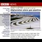

<!DOCTYPE html>
<html lang="en">
 <head>
<!-- Favicon -->
<link rel="shortcut icon" href="../../favicon.ico">
  <meta charset="utf-8"/>
  <title>
   Enron and 9-11; Connecting the Dots
  </title>
  <meta content="Post on /v/Conspiracy from 2017-08-07 by GizaDog." name="description"/>
  <meta content="Enron and 9-11; Connecting the Dots" property="og:title"/>
  <meta content="Post on /v/Conspiracy from 2017-08-07 by GizaDog." property="og:description"/>
  <link href="../../static/css/page.css" rel="stylesheet"/>
  <meta content="https://voat.conspiracy.hackliberty.org/thumbnails/1e/ca/1eca3410-4a7d-47a1-8979-42d85009e6f7.jpg" property="og:image"/>
  <meta content="https://voat.conspiracy.hackliberty.org/v/conspiracy/2046245.html" property="og:url"/>
  <meta content="width=device-width, initial-scale=1" name="viewport"/>
  <link href="https://voat.conspiracy.hackliberty.org/v/conspiracy/2046245.html" rel="canonical"/>
  <meta content="article" property="og:type"/>
  <meta content="Voat /v/Conspiracy Archive" property="og:site_name"/>
  <meta content="en_US" property="og:locale"/>
  <meta content="summary_large_image" name="twitter:card"/>
  <meta content="Enron and 9-11; Connecting the Dots" name="twitter:title"/>
  <meta content="Post on /v/Conspiracy from 2017-08-07 by GizaDog." name="twitter:description"/>
  <meta content="https://voat.conspiracy.hackliberty.org/thumbnails/1e/ca/1eca3410-4a7d-47a1-8979-42d85009e6f7.jpg" name="twitter:image"/>
 </head>
</html>
<body class="dark">
 <header>
  <nav class="navbar navbar-dark bg-primary">
    <a class="navbar-brand" href="../../index.html">/v/Conspiracy Archive</a>
    <div class="navbar-collapse">
      <ul class="navbar-nav">
        <li class="nav-item">
          <a class="nav-link" href="../../date/page-1.html">Date</a>
        </li>
        <li class="nav-item">
          <a class="nav-link" href="../../comments/page-1.html">Comments</a>
        </li>
        <li class="nav-item">
          <a class="nav-link" href="../../search.html">Search</a>
        </li>
        <li class="nav-item dropdown">
          <a class="nav-link dropdown-toggle" href="#" id="navbarDropdown" role="button" 
             data-toggle="dropdown" aria-haspopup="true" aria-expanded="false">
            subreddits
          </a>
          <div class="dropdown-menu" aria-labelledby="navbarDropdown">
            <a class="dropdown-item" href="https://reddit.conspiracy.hackliberty.org">r/conspiracy</a>
            <a class="dropdown-item" href="https://reddit.pizzagate.hackliberty.org">r/pizzagate</a>
            <a class="dropdown-item" href="https://voat.conspiracy.hackliberty.org">v/conspiracy</a>
            <a class="dropdown-item" href="https://voat.pizzagate.hackliberty.org">v/pizzagate</a>
          </div>
        </li>
      </ul>
    </div>
  </nav>
</header>

 <div id="container">
  <!-- array (
  'submissionid' => 2046245,
  'creationDate' => '2017-08-07 19:30:38',
  'domain' => 'cabaltimes.com',
  'formattedContent' => NULL,
  'isAdult' => 0,
  'isAnonymized' => 0,
  'subverse' => 'Conspiracy',
  'thumbnail' => '1eca3410-4a7d-47a1-8979-42d85009e6f7.jpg',
  'title' => 'Enron and 9-11; Connecting the Dots',
  'url' => 'http://www.cabaltimes.com/2012/03/13/enron-911-link/',
  'userName' => 'GizaDog',
  'archivedLink' => NULL,
  'archivedDomain' => NULL,
  'isDeleted' => 0,
) --><div class="content" role="main">
   <div class="sitetable linklisting" id="siteTable">
    <div class="submission id-2046245 link type-text" id="submission-2046245">
     <a name="submissionTop">
     </a>
     <p class="parent">
     </p>
     <a class="thumbnail may-blank" href="http://www.cabaltimes.com/2012/03/13/enron-911-link/" target="_self">
      
     </a>
     <div class="entry unvoted">
      <p class="title">
       <a class="title may-blank" href="http://www.cabaltimes.com/2012/03/13/enron-911-link/" tabindex="1" target="_self" title="Enron and 9-11; Connecting the Dots">
        Enron and 9-11; Connecting the Dots
       </a>
       <span class="domain">
        (
        <a href="https://archive.searchvoat.co/search.php?d=cabaltimes.com">
         cabaltimes.com
        </a>
        )
       </span>
      </p>
      <p class="tagline">
       submitted
       <time datetime="2017-08-07T19:30:38+00:00" title="08/07/2017 7:30:38 PM">
        2017-08-07T19:30
       </time>
       by
       <span class="userattrs">
        <a class="author may-blank" href="https://archive.searchvoat.co/search.php?u=GizaDog">
         GizaDog
        </a>
       </span>
      </p>
      <ul class="flat-list buttons">
       <li class="first">
        <a class="comments may-blank" href="https://archive.searchvoat.co/v/Conspiracy/2046245" rel="nofollow">
         1 comment
        </a>
       </li>
      </ul>
     </div>
     <div class="child">
     </div>
     <div class="clearleft">
     </div>
    </div>
    <div class="clearleft">
    </div>
   </div>
   <div class="horizontal-line">
   </div>
   <div class="commentarea">
    <div class="sitetable nestedlisting" id="siteTable">
     <div class="child id-10101906 comment even" style="">
      <div class="entry unvoted">
       <div class="noncollapsed" id="10101906" style=";">
        <p class="tagline">
         <a class="author may-blank" href="https://archive.searchvoat.co/search.php?u=WhyNoDonuts">
          WhyNoDonuts
         </a>
         <span class="userattrs">
         </span>
         <time datetime="2017-08-08T17:29:31+00:00" title="8/8/2017 5:29:31 PM">
          2017-08-08T17:29
         </time>
        </p>
        <div class="usertext-body may-blank-within" id="commentContent-10101906">
         <div class="md">
          <p>
           <p>
            A lot of shadowy finance happened at the time. A little known insurance company called Chubb held the risk for the WTC buildings, Enron, and another huge blowout called WorldCom. The then-CEO (who was born into this position, his grandfather was a founder) put on his pin-stripiest suit and walked into the 9/11 Senate hearing and said that Chubb is bound by insurance regulations to investigate this loss, and lo-and-behold, the towers' collapse was deemed to be equivalent to an act of god, and that the loss would be paid by the government, and that no investigation would be done by insurance professionals. Two weeks later, he retired a decade early from the position he was born into, and the 9/11 commission was created to handle the "investigation." nothing to see here, keep walking folks...
           </p>
          </p>
         </div>
        </div>
        <ul class="flat-list buttons">
         <li class="first">
          <a class="bylink" href="https://archive.searchvoat.co/v/Conspiracy/2046245/10101906" rel="nofollow">
           link
          </a>
         </li>
        </ul>
       </div>
      </div>
     </div>
    </div>
   </div>
  </div>
 </div>
<!-- Footer Section -->
<footer class="container-fluid mt-3">
  <p class="small mb-0">
    /v/conspiracy archive has 42504 posts and 159856 total comments.
    <a href="https://git.hackliberty.org/c0mmando/voat-conspiracy-archive/">source code</a>.
  </p>
</footer>

<script src="../../static/js/jquery-3.7.1.slim.min.js"></script>
<script src="../../static/js/comments-toggle.js"></script>

</body>
